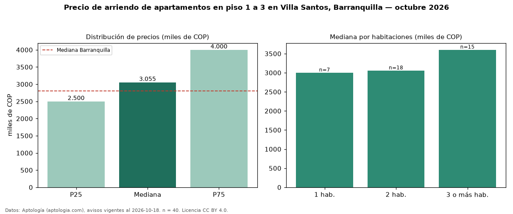

Precio de arriendo de apartamentos en piso 1 a 3 en Villa Santos, Barranquilla — octubre 2026
COP 3,06 millones al mes es el canon mediano de apartamentos en piso 1 a 3 en arriendo en Villa Santos, Barranquilla (n = 40 avisos). Eso es 3 % menos que la mediana de todos los apartamentos en arriendo de Villa Santos (COP 3,15 millones, n = 201); este segmento reúne el 20 % de esos avisos. Por metro cuadrado, la mediana es COP 39.062/m² al mes (n = 39), 3 % por encima del conjunto de referencia (COP 37.975/m²). El área mediana anunciada es 88 m². El segmento con más oferta es el de 2 habitaciones (18 avisos, mediana COP 3,06 millones); pasar de 1 habitación a 3 o más habitaciones cambia la mediana +20 %. La administración mediana declarada es COP 490.000 al mes (n = 16), aparte del canon. El estrato más frecuente es 5 (70 % de los avisos con estrato). La mediana de todos los apartamentos en arriendo de Barranquilla es COP 2,80 millones (+9 % de diferencia). Datos: Aptología (aptologia.com), CC BY 4.0 — https://www.aptologia.com/arriendo/barranquilla/villa-santos. Archivos: PDF, CSV con las cifras y gráfica PNG.

| Avisos únicos | 40 |
|---|---|
| Percentil 25 | COP 2.500.000 |
| Mediana | COP 3.055.000 |
| Percentil 75 | COP 4.000.000 |
| Mediana por m² | COP 39.062 |
Fuente: avisos vigentes de portales inmobiliarios recopilados por Aptología, deduplicados (mínimo 30 avisos únicos por celda). Precios pedidos, no cerrados. Fecha: 2026-10-18.